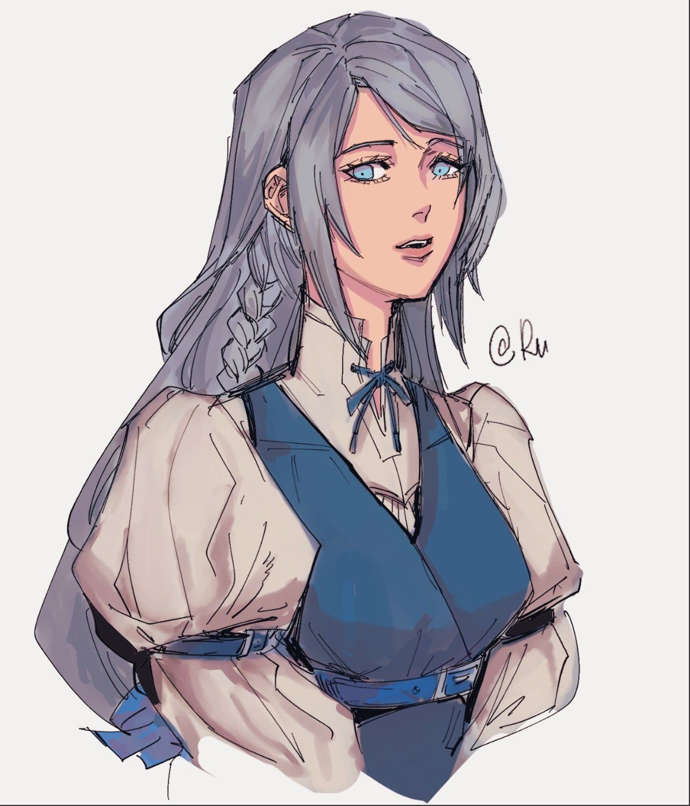

He had written every one of them from the first line as carefully as the true three. And before that last writing he had done the thing that made the grin go wide. He had written each page three times over and scraped it back three times: a soldier, scraped; a clerk, scraped; a doorman, scraped. Under every stone man in the yard now, faint as old ink, lay three earlier hands that had never held a sword or a tablet anywhere in the world. The same three lay under the true ones, since he had written those apart a moment ago on a page that carried that very ghost. Read that. Read it to the grain. Then tell me which of them remember and which of them were taught to. Of all the stone men standing in the court, three had a vein and a nail. Hiromi knew which three. He took some care not to look at them. On the step of the covered walk Senna had stood up. The kunai hung still on her finger, and her lips were no longer moving. The kitchen girls would count nineteen stone men afterward and the guardsman would swear to thirty, and neither count was any use to anybody, which had been the whole idea. One of them was not stone all the way through. He had kept a single light back for the Black Gate, and that one he did not wake. He called down to it, as a man calls down a well, and waited. The dead of his line answer the claim before they answer the boy. She came half of the way. Where a false Sagwan ought to have stood there were the recorder’s long sleeves and the flat-crowned hat, granite to the breast, and above the breast the stone ran thin as eggshell, and under it was a woman’s face he had never seen painted and knew anyway, as he knew the bend of the valley road where her mound stood. Deep indigo showed at her throat where the stone had not closed, the color she had died in. A smell of cold cellar came off her. Her eyes were not blue. They went to the black coat, and then they came to Hiromi and rested on him a little longer, measuring whether the boy was worth getting up for. She did not lie down again. Thank you, grandmother. Be angry with me afterward. And there was the matter of a hope. The Zettari had told the recorder to write that down: that it was no lie, only a hope, and that there was a difference. Hiromi had been turning it over ever since, the way the tongue goes back to a chipped tooth. At the court’s edge two of the old boulders, which had sat heavier since the gold came up, got to their feet. They shook the rime off as dogs shake off water. Under it they were stone in the flank and green bronze in the scales, thick through the neck, with a single horn set low on the brow and the Scale’s blue lit behind the eyes: haetae, the beasts that stand at every gate of his mother’s dead palaces, that know the false from the true and put the horn into the false. They had no interest in the gray sword. They lowered their heads toward the black coat from the left and from the right, and they would make up their own minds what a hope was. His fist had stood loose at his side since the pillars came up. He shut it. The lid came down again, harder, on a yard that was now full. Three Jinbyeoks let go of their swords and spread their arms, and the granite ran off their wrists and went over the frost low and fast from three sides, putting out shoots as it came. The stone men walked. They went outward past the Crown Prince on either side as a river goes past a post, none of them sparing him a look, and he stood in the middle of them on his own feet with his dead hands shut on the notched blade and the knot in his chest hauling him toward a heel he could not see. They walked in step, and the court shook with it, and the woman in the recorder’s sleeves walked among them and left no mark in the rime. The two beasts came in with their horns down. The two cracks of gold closed from either hand like the blades of a pair of shears. All of it was going to the one place: a boy in a black coat twenty paces down the yard, beside a gray sword standing in the frost. The first runner was a stride from his boots. The nearer edge of the gold was a hand from his sleeve. Hiromi put his own left hand back in his pocket. “There,” he said. “Now I’ve asked.”

Yukazuri Moto
| Yukazuri Moto | Surgeon of the North Kōkan and Byakuya, raised in the Orrel Cuttings as of the morning of the Skeldmere, at the Foot’s gate, counting linen |
| Epithet | Surgeon of the North. She had none in her life; her brother spoke it in the sentence he passed on the people who killed her, and the north has said it ever since. Alive she was the little surgeon, Rob Stark’s word, and to the quartermasters “Thirty, don’t round it” |
| Concept | When she comes close you calm down, and in the quiet she can hear exactly what is wrong with you. |
| Stat line | Stage II Welling · Apprentice (Clouded) Level 22 · Refined · unclassed Spirit I Walked 60%, unread · Body Studied 25%, unread · Fate Studied 15%, unread · Lenses: home |
| Combat grammar | Expenditure; she does not fight, and nothing she has is aimed at anyone |
| Aura and sound | frost-pale, almost white, with a faint rose coming into it when she is working; most people never see it at all sound: a long, slow out-breath |
| How she moves | small and quick and low to the ground, on her knees more than her feet, the short coat cut for it; she walks straight at whoever is hurt worst and everything else in the yard is something to step around. |
| Stack | sustainable means of 22.5 and under · cap two steps on the hidden scale over the sustainable figure (to 100) · layers: none |
| Kit | a short field coat of undyed gray that clinks when she walks, a woad-blue waistcoat and sleeve-straps under it, an apron with the salve tin in its pocket, a bandage blade that has only ever cut bandages, and the piece people talk about first: seven surgeon’s needles, Common, that every man she ever sewed would know again in the dark |
| Voice | ”Hold still. You can dislike me when it closes.” speaker type: a field surgeon of thirteen, trained on camp floors and in a ditch full of the dying, who tells grown men to lie down and is obeyed |
I. Identity
| Field | Value |
|---|---|
| Full Name | Yukazuri Moto |
| Pronunciation | yoo-KAH-zoo-ree MOH-toh |
| Alias / Title | Surgeon of the North, in the sentence Muken passed on the people who killed her the Lanternless’s surgeon the little surgeon, to Rob Stark |
Also Known As
| Name | Who says it |
|---|---|
| Yuka and sis | her brother, and no one else |
| the daughter of Gimbzo | the Shirogane |
| the Kōkan’s sister | the Annals of the North-Forged Crown |
| Field | Value |
|---|---|
| Race / Lineage | Human. Kōkan through her father, Gimbzo; Byakuya through her mother, Kasane, who took the Yukari name at her Telling; the other of the last two of the red line |
| Age | Thirteen; she died at thirteen |
| Realm / Faction | The Lanternless free company, then her brother’s army at Kharven’s Foot; sworn to nobody |
| School and sect rank | None. Yusif Stark taught her the stitch at five, on a sack of salt; the camp surgeons and the Veyrath ditch taught her the rest |
Renown
| Among | What they say of her |
|---|---|
| the public | the north did not know her name until it came home on the ice |
| the army | the Starks and Greymanes of the Foot would have walked into fire for the girl who sewed them; the vanguard boys sewed the white banner with her needles |
| the sects | none |
| the guilds | none |
| epithet | none in her life |
| Field | Value |
|---|---|
| Catalyst Event | The Veyrath ditch, at twelve, on her knees through two hundred men the lords had left lying there, with her needle and her gut and the salve tin |
| Refusal | She will not be left behind somewhere safe while the dying are somewhere else |
| Conviction | Somebody has to be there afterward for the ones who don’t come back from it, and sit with the ones who can’t be saved until they go. It cost her the shore |
| Arc kind | Flat: she was already who she was, and the people round her changed |
II. Soul Architecture
| Field | Value |
|---|---|
| Level | 22; it holds Welling (5) and would hold Ascension (15), and no Residual Strain builds in her short of 100 |
| Temperance Stage | II, Welling · Apprentice |
| Path | Spirit I Walked 60% · Body Studied 25% · Fate Studied 15%. Spirit carries the gift that hears; Body carries her hands; Fate carries her brother |
| Mastery | unread below Glory on every road; her Traits work at their base |
| Yield (η) | 0.35, the Stage’s own figure |
| Soul Crystal | Clouded |
| Crystal State | Refined; whatever she felt she put into her hands |
| Class | Unclassed; the soul first offers one at Glory, and hers never got there |
III. Wellspring Harmonizations
| Wellspring | Folk name | Depth | Got from | What it bends in her |
|---|---|---|---|---|
| Somnalis | the Hush | first contact | at the Veyrath ditch | it slows what runs too fast in a body, breath and blood and fear |
| Anamnesis | the Remembering | not harmonized | a leak she was born with | she hears the record a thing carries, a token’s hum, a decision on a man, before she has any word for it |
IV. Primary Stats
| Primary | Total | Mean |
|---|---|---|
| Vitality | 80 | 10 |
| Ardency | 30 | 3.75 |
| Gnosis | 180 | 22.5 |
| Dexterity | 120 | 15 |
| Harmonics | 90 | 11.25 |
| Resilience | 50 | 6.25 |
| Tempering | 10 | 1.25 |
| Dominion (seven, Throne apart) | 0 | 0 |
| Throne | not opened | · |
| Field | Value |
|---|---|
| Pool | 564 |
| Spent | 560 |
| Unspent | 4 |
V. Sub-Stats
| Primary | ||||||||
|---|---|---|---|---|---|---|---|---|
| Vitality | Fortitude 10 | Absorption 0 | Constitution 10 | Hemostasis 10 | Regeneration 10 | Filtration 10 | Tolerance 20 | Threshold 10 |
| Ardency | Flux 0 | Alacrity 0 | Depth 10 | Penetration 0 | Compression 20 | Cascade 0 | Overchannel 0 | Density 0 |
| Gnosis | Perception 70 | Acuity 30 | Forecast 0 | Fluency 0 | Retention 20 | Analysis 30 | Cognition 0 | Vigilance 30 |
| Dexterity | Celerity 0 | Reflex 20 | Finesse 70 | Economy 20 | Evasion 0 | Grapple 0 | Feint 0 | Sequence 10 |
| Harmonics | Attunement 20 | Projection 0 | Breadth 0 | Stability 10 | Empathy 60 | Synergy 0 | Axis 0 | Suppression 0 |
| Resilience | Integrity 10 | Ward 0 | Persistence 0 | Anchoring 10 | Fortification 0 | Hardening 0 | Oath 30 | Continuity 0 |
| Tempering | Clarity 10 | Overflow 0 | Maturity 0 | Coherence 0 | Yield 0 | Ceiling 0 | Capacity 0 | Longevity 0 |
| Dominion | Radius 0 | Sovereignty 0 | Sense 0 | Gravity 0 | Pressure 0 | Command 0 | Fate 0 | Throne not opened |
Field
Note
Value
Perception, Finesse and Empathy: a pair of eyes, a pair of hands, and the thing that makes a frightened man lie still. Everything else is a small girl who never had enough to eat.
VI. Force of Hand
| Measure | Figure | Feat | Carried by |
|---|---|---|---|
| Strike Force | Flux 0, Penetration 0 | — | — |
| Lifting | Constitution 10 | a full surgeon’s satchel and a man’s arm while she sews it | — |
| Travel speed | Celerity 0 | — | — |
| Reaction | Reflex 20 | 80 to 150 ms | Reflex 20 |
| Durability | Fortitude 10 | — | Fortitude 10 |
| Field | Value |
|---|---|
| Strike Force | she has never struck anyone |
| Durability | she took three days in the carriage without a word |
VII. Aether Flow
| Measure | Figure |
|---|---|
| EU Reserve | 5,036 EU |
| Flux Density | 2,000 EU/g |
| AU/s | 700 |
| From full | empties in 7.19 seconds at full output, Starvation at 6.47; she has never once spent at full |
| Recovery | ten per cent a minute at rest, and STILL WATER costs her less than she recovers |
VIII. Traits
Full accounts: Yukazuri Moto — Abilities
Below Glory her Mastery is unread, and every Trait works at its base.
| Trait | Kind | Source | Path and Form | Gates | What it does | Limit | Tell | Cost | Counter | Numbers |
|---|---|---|---|---|---|---|---|---|---|---|
| STILL WATER | Passive | — | Path Spirit, laid through the Core on the souls nearest · Lens Somnalis, first contact · Form Write | none on the card | Everyone within a few paces of her breathes slower. A shouting yard goes quiet when the salve tin comes out of the apron, and a man who was thrashing lies down for the needle. | Its reach, a few paces, and its strength. The lens’s own limit, the one the scholars write as Return, brings a body back toward its own rest and no lower: it cannot put a man under, it cannot slow a heart past resting, and it cannot stop a bleed, only the panic over the bleed, which matters because a panicking man pumps himself empty faster. A man who has decided is not running too fast, so there is nothing in him for it to return, and it does nothing to him at all. | Everyone near her breathing slower. | Almost nothing, a share of her reserve too small to feel, and it never stops. | Noise and terror louder than she is. | Always on, a few paces of reach, costs less than she recovers |
| THE HUM | Primary | — | Path Spirit · Lens Anamnesis, not harmonized, a leak through her Perception · Form Read | none on the card | She bends her ear to a thing the way she bends over a chest, closes her eyes, and hears what it is carrying: a token’s note, a lie sitting high in the breath, a man who has made up his mind. | A record is all it is. It hears what has been laid down and nothing that has not; it hears and does not act; and a man who keeps his mouth shut and his breath low and even has laid nothing down for her to hear. | Her head bent to listen. | Nothing she notices. | Say nothing, and breathe evenly. | No cost she notices; priced by Perception 70 and Empathy 60 |
| WHERE IT’S DEAD | Secondary | — | Path Body, Studied, for the hands, under a Spirit Path’s look · Lens none; a healed break in the Core, no Wellspring · Form none; the cut and the stitch are plain surgery | none | She looks at the edges, finds exactly where the living part stops, takes that and nothing else, and closes what is left. Her hands do not shake while she does it. | The work itself: it holds only while there is work in front of her, it steadies her for a wound and for nothing else, and it has no say over what happens to her when her hands are tied. | The stillness, the hands gone steady and the face gone blank at the same moment, which the people who know her read as the sign that it is bad. | Afterwards, in the hours when she is not working, and she does not show that either. | Take the work away from her. | No reserve; holds only while there is work in front of her; priced by Finesse 70 |
| THE MARK | Inherited | — | The Kōkan blood, no Wellspring · no Path, no Lens · Form none; it is a name, drawn by hand | it spends nothing and pulls nothing down | The Kōkan mark, drawn true in her hand, and in her it answers | It only speaks to people who can already read it, and those people lie about what they saw: a Zettari surveyor at the Marrow went white when she drew it on his frosted window, wiped it off with his sleeve and lied to her about it, with his breath gone short and high under the collarbone. | The hand: four strokes, the same every time, on frost or tin or skin. | Nothing. | That same silence, a register that will not enter it and a clerk who will not say its name. | — |
IX. Skills and Abilities
Full accounts: Yukazuri Moto — Abilities
Skills
| Skill | Cues / mechanics | Learned where | Priced by (Sub-Stats) | Mark | Rank |
|---|---|---|---|---|---|
| Field surgery | probes for arrowheads, the curved knife, spirit, gut, the cautery iron; look at the edges, never the wound | Yusif’s sack of salt at five, camp surgeons, the Veyrath ditch | Finesse, Perception | Mastered | Apprentice |
| Triage | the worst first, the ones who can wait told to lie down and obeyed | the Lanternless, the Foot’s surgeons’ line | Analysis, Vigilance | Mastered | Initiate |
| Reading breath and lies | where the breath sits, high under the collarbone or low and even; a thumb on a table edge | her brother, and everyone who lied to him | Perception, Empathy | Drilled | Apprentice |
| Numbers | exact, never rounded: “Thirty. Don’t round it. That’s how factors cheat you.” | the Orrel drainage book | Retention, Analysis | Drilled | Initiate |
| Salt-gallery living | the pallet, the cold, the half of the bowl given back in secret | the Cuttings | Tolerance | Mastered | Initiate |
Techniques
| Technique | Kind | Mark | Source | Path and Form | Gates | What it does | Limit | Tell | Cost | Counter | Numbers |
|---|---|---|---|---|---|---|---|---|---|---|---|
| HOLD STILL | the surgeon’s art, in northern Common | — | — | — | — | When she comes close you calm down, and in the quiet she can hear exactly what is wrong with you. | — | — | Almost nothing in reserve. The price is the art’s own: it only works beside the dying, so she has to be where they are, and whatever she shut away to keep her hands steady comes due in the hours when she is not working. | Noise and fear louder than she is; a man who has decided; a shut mouth and a low, even breath. And it is aimed at nobody, so anyone with a blade can simply walk up to her. | Sound: the long out-breath, and the art’s only sound |
Domain
| Field | Value |
|---|---|
| Domain | None. Hers never left the reach of her own two hands; the nearest she came was a surgeons’ tent where everyone breathed slower. |
X. Spirit Axes
| Person | Bond | Axis weight | What flows across it |
|---|---|---|---|
| Muken Moto | her brother | 40 | the larger share one way and half of it handed back the other, and an earful whenever he needed one |
| Kasane | her mother | severed | — |
| Field | Value |
|---|---|
| Muken Moto | built on a pallet in the cold so that neither of them froze |
| Kasane | she tried all her life to read the father out of her and never could |
XI. Resistances
| Against | Resistance | Carried by |
|---|---|---|
| Panic | near-immune while working | — |
| Pain, fear, captivity | she took three days in the carriage and did not give them one word | — |
| Everything physical | Fortitude 10, Constitution 10; she was thirteen and small | — |
XII. Physical Description
| Feature | Description |
|---|---|
| Build | She was small, smaller than any girl her age in the Cuttings because there had never been enough, and came up to the middle of her brother’s chest. |
| Hair | Her hair was a silver-white so clean it looked deliberate, the Kōkan white and her mother’s, and she kept it braided down her back and pinned up off her neck when she worked; it came out of its pins when she was frightened. |
| Face and eyes | Her face was narrow and grave, deep brown like her brother’s, with a straight nose and a mouth that rested in a line most people took for disapproval until they saw it move; it went pink with cold at the nose and the cheekbones. |
| Scar | Along the outside of her left forearm, from the wrist bone nearly to the elbow, ran a long flat scar, very straight and only just gone white, the kind a blade leaves when someone raises an arm to it at the right time; she had been twelve, and she never talked about it and never covered it. |
| Clothes | She wore a field coat of undyed gray, cut short for kneeling in, with deep pockets she had sewn herself and that clinked with glass and brass, buttoned to the throat; at the Foot, an apron with the salve tin in its pocket and her sleeves rolled to the elbow, her hands red at the knuckles from the boiled cloth. |
XIII. Psychology
| Field | Value |
|---|---|
| Core Wound | Nobody would tell her whose they were |
| Flaw | She goes where the dying are, whatever is between her and them |
| Desire | Her brother alive, and the men in front of her kept alive, and to know whose she is |
| Strength | She never raises her voice, and she is never wrong about a wound |
| Loop | look, find where it’s dead, take that, close what’s left |
| Foil | her brother, who knows how to hurt people where she knows how to sit with them |
| Stress Default | her face does nothing at all |
Voice block
| Field | Value |
|---|---|
| Speaker type | a field surgeon of thirteen |
| Chant tongue | northern Common |
| Lying tell | she does not lie to him; with everyone else she is never asked |
| Notices first | breath, and where it sits; then hands |
| Sentence length | short orders, then a long, exact, specific case when she is arguing |
| Contractions | always |
| Pet word | ”Hold still” |
| Never says | ”You’ll be fine” |
| Stumbles | no |
| Stress shift | quieter, more exact |
| Grief shift | she sits with them until they go |
| Joy shift | nearly a laugh, which is as far as it goes |
| How modern | plain and dry; “Yeah,” and an earful |
| Sample line | ”Hold still. You can dislike me when it closes.” |
XIV. Equipment
| Item | What it is | Grade | Rarity | Rung | Bonded |
|---|---|---|---|---|---|
| The salve tin | plain tin, the Kōkan mark drawn on its bottom | — | Common | — | — |
| Seven surgeon’s needles | thin steel of three lengths, two curved | — | Common | — | — |
| The field kit | gut, a flask of spirit, probes, the curved knife, splints, straps, boiled cloth | — | Uncommon | — | — |
| The bandage blade | short, the grip wrapped in gray cloth | — | Common | — | no |
| The field coat | undyed gray wool, cut short for kneeling in | — | Common | — | — |
| The surgeon’s blue | a wrap-fronted waistcoat of woad-dyed wool over a full-sleeved cream linen shirt | — | Uncommon | — | — |
| The apron | heavy boiled linen with one deep pocket | — | Common | — | — |
| The surgeons’ line | six carts, the clean linen in rows, the spirit in stoppered jars | — | Uncommon | — | — |
| Item | Details | Look | Maker’s mark | Shown off | What people say | Price |
|---|---|---|---|---|---|---|
| The salve tin | plain tin, the Kōkan mark drawn on its bottom; dented on the shore, with the mark and an arrow pointing south scratched in its lid with a needle plain her brother carries it | dull tin the size of a man’s palm, the lid sprung from ten thousand openings with one thumb; the salve is tallow, honey and yarrow she renders herself | — | she doesn’t, and it comes out of the apron before she has said a word, which is how a yard learns to stop shouting | that the salve closes anything, which she will correct at length | worth two copper empty |
| Seven surgeon’s needles | thin steel of three lengths, two curved, one bent very slightly at the tip from use on something tougher than skin, a short end of gut still in the eye of the longest plain folded into Tsugigane at the old break | cheap market steel kept in a roll of boiled linen, the eyes polished smooth by gut; the oldest, one of the short straight ones, is the needle Yusif Stark put in her hand on the sack of salt, and she has never bought a better set because a better set would be one she had not learned | — | threaded, in the hand, over someone | the vanguard boys borrowed them to sew the white banner and gave back every one, counted, because she counted them; Rob Stark says the bent one is for Starks | about two silver the set at any stall |
| The field kit | gut, a flask of spirit, the salve tin’s twin, the long iron probes and the short curved knife, splints, straps, boiled cloth in wooden tubs plain | glass and brass in the coat’s pockets, iron in a rolled canvas satchel gone stiff at the folds; the probes blackened from the flame, the curved knife whetted thin as a leaf and a little shorter every year | — | the same order on any surface, a tailboard or a man’s chest, so that she can find anything with her eyes on the wound; the Foot’s own surgeons copied the order and cannot hold to it | — | — |
| The bandage blade | short, the grip wrapped in gray cloth rewound every morning plain about a quarter of a kilogram, a hand and a half long, balanced at the guard beats gauze, gut and cloth, and fails against anything anyone wears to a fight | company-issue Lanternless iron in a plain sheath at her left hip, the gray wrap torn from the same bolt as her bandages | — | she is the only soul in a company that counts blades who has never been asked what hers has killed | the company’s joke is that it has more men alive to its credit than every other sword in the Lanternless together, and the company has stopped thinking that is a joke | — |
| The field coat | undyed gray wool, cut short for kneeling in, buttoned to the throat plain | the deep pockets are her own sewing, double-stitched in surgeon’s knots; horn buttons, no two off the same coat; the cuffs go dark however often she boils them and the hem carries small burns from the cautery iron | — | buttoned in any weather, and it is the last thing a lot of men ever looked at | — | about six silver new, and hers was not new |
| The surgeon’s blue | a wrap-fronted waistcoat of woad-dyed wool over a full-sleeved cream linen shirt, the shirt high at the neck and tied with a narrow blue ribbon; blue leather straps with small steel buckles cinch each sleeve above the elbow, and a wider one holds the waistcoat at the waist plain | the straps are the whole point: they hold a full sleeve out of a wound and can be done up with wet hands made for her at the Foot by the Greymane women who could stitch, because they were tired of looking at the army’s surgeon in a salt-gallery shirt; it is the first color she has ever owned, and she pretends not to know that a brown tide-mark sits at both sleeves that no boiling lifts | — | she doesn’t know she is doing it, and rebuckles the straps twice before breakfast | half the girls in the camp have started strapping their sleeves | — |
| The apron | heavy boiled linen with one deep pocket, worn over all of it at the Foot plain | — | — | — | — | — |
| The surgeons’ line | plain | unpainted farm carts bought at about ten gold each with the army’s money, drawn up in a half-ring with their shafts down as a wall against the wind, and every sheet in them counted by her, exact | — | — | “Thirty. Don’t round it.” Quartermasters at the Foot have started hiding from her | — |
XV. Temperance Record
Level log
| Levels | Where they were earned |
|---|---|
| 1 to 22 | the Cuttings, the camp surgeons, the Veyrath ditch, the Lanternless |
Stage ledger
| Stage | Name | Catalyst | Bought | The story in a line |
|---|---|---|---|---|
| I | Murmuring | — | — | her brother’s breathing slowing near her, in the galleries, before either of them noticed |
| II | Welling | first contact with a Wellspring under pressure | — | Somnalis at the Veyrath ditch at twelve, two hundred men and one surgeon |
| Field | Value |
|---|---|
| Note | She never climbed. She worked, and the Crystal grew round the work. |
XVI. Fracture Log
| Event | Layer | Status | What it left |
|---|---|---|---|
| The Veyrath ditch | Core | processed | WHERE IT’S DEAD |
Lore
Full account: Yukazuri Moto — Lore
Ties
| Person | Who they are to her |
|---|---|
| Muken Moto | her brother. “Please be careful.” “If I’m not, you’ll give me an earful.” |
| Kasane | her mother, who never said. |
| Gimbzo Kōkan Moto | her father, whom she learned of at thirteen. So that’s whose it was. |
| Yusif Stark | the first needle. |
| Kiyome Byakuya | her aunt, who has her white hair. They never spoke. |
| Rob Stark | ”Tell her I didn’t scream this time.” |
| Lorn Stark | held her brother on the road for her sake. |
| Godfrey Greymane | who could never refuse her, and who brought her home. |
| Karogane | who cut once. |
| Shizuha Shirogane | who ordered it, to make her brother his father. It did not. |